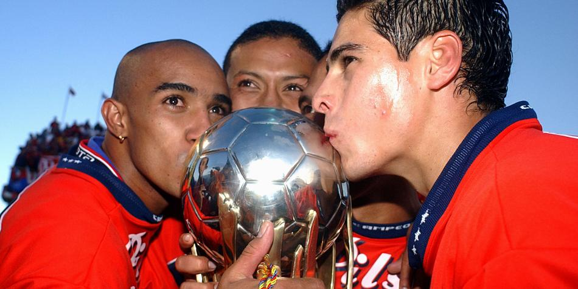
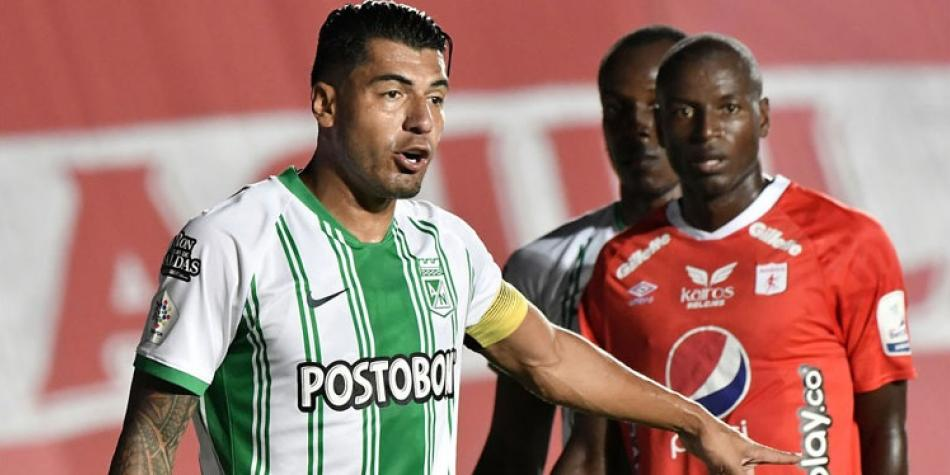
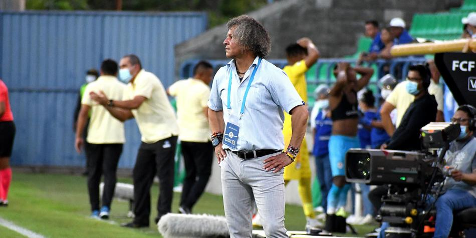

Seccion de Noticias
Ídolo del Medellín vuelve a casa para formar futuros talentos
Tras la llegada de Jorge Horacio Serna a las categorías menores del Deportivo Independiente Medellín, este miércoles 6 de octubre, el club antioqueño oficializó el regreso de otro referente poderoso como Roberto Carlos Cortés, quien sumará sus conocimientos al proyecto de Fuerzas Básicas.
América vs. Nacional: fecha del partido especial de Juan Carlos Osorio
América de Cali y Atlético Nacional se enfrentará próximamente por la fecha 15 de la Liga BetPlay II-2021. Será un partido especial, pues Juan Carlos Osorio enfrentará a su exequipo y llega con la obligación de ganar, pues es criticado por la afición escarlata, que tendrá en la mira al director técnico si no saca un buen resultado en el Pascual Guerrero.
¡Hay proyecto a largo plazo! Alberto Gamero renovó con Millonarios
El trasegar de Millonarios en la Liga BetPlay Dimayor es de admirar, líder de la reclasificación del año, segundo en la tabla por detrás de Atlético Nacional y muy cerca de confirmar su participación en los cuadrangulares de fin de fin de año.